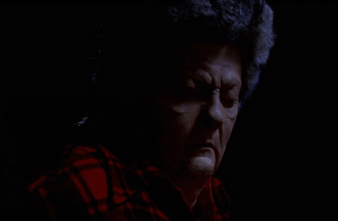

Header!
This is the intro. This is the intro. This is the intro. This is the intro. This is the intro. This is the intro. This is the intro. This is the intro. This is the intro. This is the intro. This is the intro. This is the intro. This is the intro. This is the intro. This is the intro. This is the intro.
Genre: Cult Classic
Comedy:
Cinema:
This year the list starts off with one of the best damn movies ever made. After making the original Evil Dead, a master-class in horror, director Sam Raimi set his sights on a sequel--or rather, the beginning of a trilogy. But he decided to take the second film in a different direction.
Evil Dead 2 lies right at the intersection between horror and comedy, which is an ideal place to be. The director took influences from such comedic masters as the Three Stooges and the Marx Brothers to add a streak of zaniness, which pairs very well with the over-the-top violence. Working on a shoe-string budget with his friends and family, Raimi developed (and then mastered) several innovative special effects techniques. And of course, legendary lead actor Bruce Campbell takes Raimi's vision and carries the entire thing on his shoulders. This movie has developed a colossal cult following, and it's easy to see why. Anyone claiming to appreciate horror would do well to study Evil Dead 2.
How to Watch:
There is no wrong way to watch this movie. It's wacky fun all the way through. It pairs well with alcohol, it's not too serious, but it compares well against any other movie you can name regardless. If you're only going to watch one, watch this one.
Genre: Mystery
Suspense:
Fucked Up:
Blue Velvet is truly an unforgettable movie. While it's not strictly speaking a horror film, the first five minutes will make obvious the sinister tone of this thrilling mystery. Director David Lynch has a long history of dark, weird, traumatic filmmaking and Blue Velvet is a top-teir example.
This movie is not for everyone. The imagery is disturbing, and the story changes gears very quickly. It cycles rapidly from deep sadness to graphic psychological violence, and underneath runs a tone of gruesome suspense. Lead performances by Kyle MacLachlan (of Twin Peaks fame) and the manic Dennis Hopper bring Lynch's art to life in glorious detail.
Blue Velvet is full of scenes that will stay with you for years. It's an emotionally charged monstrosity that cuts to the very core of human nature. And it's definitely worth a watch.
How to Watch:
This movie is absolute black metal. There's a significant mental toll, so brace yourself as best you can for some real brutality. In my opinion, it's probably best watched alone--or at the very least, not with a casual acquaintance.
Genre: Comedy / Horror Parody
Comedy:
Originality:
The Zombie film is an ancient horror trope, first engineered in the late sixties with the seminal Night of the Living Dead. Since then, there have been countless zombie movies made of all different sorts. Given how embedded such films are in modern western culture, it's no surprise that numerous parodies have been made over the years.
Enter Shaun of the Dead, another excellent example of the natural interplay between comedy and horror. Made by the talented filmmaker Edgar Wright (Hot Fuzz, Scott Pilgrim vs. the World) and acted admirably by his favorite duo (Simon Pegg and Nick Frost), Shaun of the Dead was a crossover hit. Both original and familiar, this movie pays beautiful homage to the zombie genre while simultaneously mocking its most recognizeable tropes. It's also filled with great music and loveable characters, making it a very endearing vision of modern society. One of the lighter movies on the list, Shaun of the Dead is still a respectable horror that deserves to be remembered.
How to Watch:
It's a little grisly at times, and spans the range of emotions, but overall it's a fun and casual movie. It's easy to watch, great to drink with, and perfect for winding down after one of the more extreme titles on the list. I'd save this one for when you need it.
Genre: Comedy / Horror Parody
Mindfuck:
Gory:
TBD
How to Watch:
It's a little grisly at times, and spans the range of emotions, but overall it's a fun and casual movie. It's easy to watch, great to drink with, and perfect for winding down after one of the more extreme titles on the list. I'd save this one for when you need it.
Genre: Monster Movie
Korean:
Classic:
The Host is an interesting piece. Made in 2006, this Korean film adheres faithfully to the traditional moster movie formula. Not too gory, not too brutal, but still full of action and danger.
This movie is reminiscent of the Godzilla series with a modern twist. Aditionally, the monster is much smaller, and so the destruction takes a very personal form. It's the simple story of a man fighting against powers beyond his control to protect the things he loves. Even with a mutated monster running around this film feels relatable and hits close to home. As with Godzilla, there's an underlying theme of man's delicate relationship with nature--a human problem as old as time. The Host is a surprisingly well-constructed horror movie that is easily worth the trouble of reading a bunch of subtitles.
How to Watch:
This is a pretty easy watch. Settle in with some popcorn and get ready for something nearly extinct in America: a well-made modern blockbuster monster movie.
Genre: Classic Cinema
Perfect:
Iconic:
When you talk about cinema, there's one name that can't be ignored: Stanley Kubrick. Truly, as a director, Kubrick is one of the best there ever was. And luckily for us, one of his best movies is a stunning horror. An adaptation of the Stephen King novel by the same name, this movie is arguably the best adaptation ever made.
The Shining is a haunting and cerebral masterpiece. It's also a puzzle; by nature, it's difficult to even say exactly what it's about. Is it a chronicle of a family's descent into madness? Is it a ghost story? Or is something even more nefarious at work? There are infinite interpretations. But one thing that can almost certainly be said, is that this movie depicts something that lies outside our understanding. With shocking visuals and a genuinely tense atmosphere, The Shining is among the best films ever.
How to Watch:
In order to appreciate this one, you really have to watch it close. Kubrik personally arranged each scene down to every detail and it's full of little secrets that you'd never expect. I'd argue we still probably don't fully understand this movie nearly forty years later. Watch it hard.